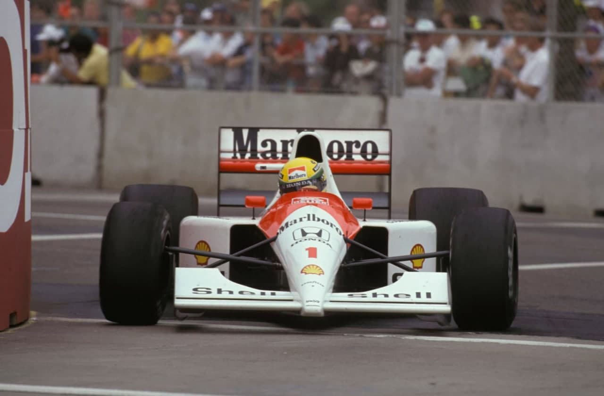
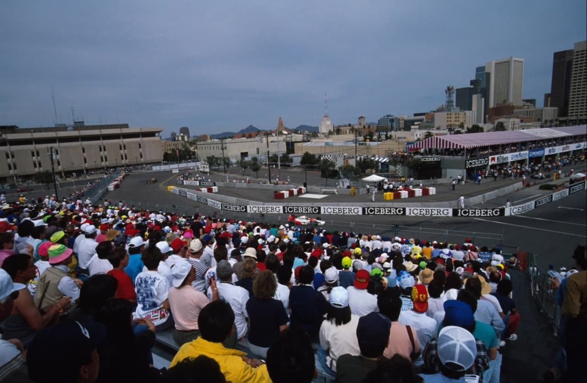
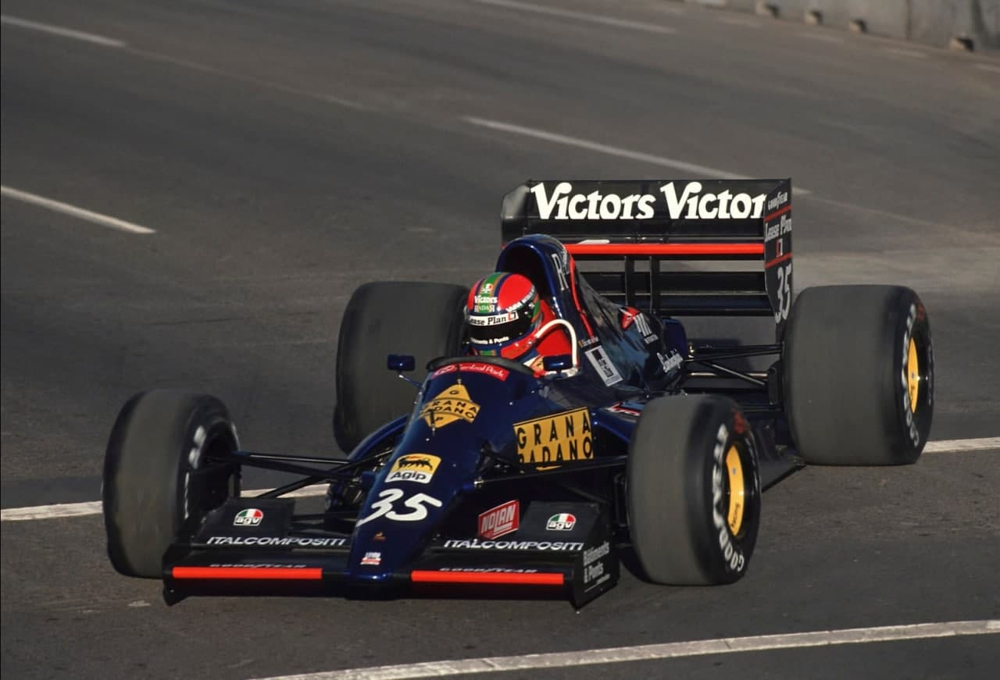
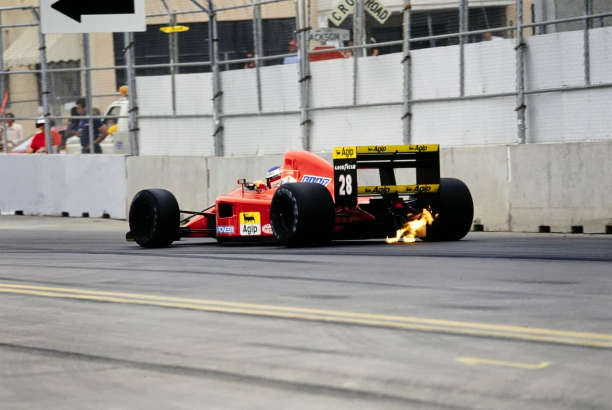
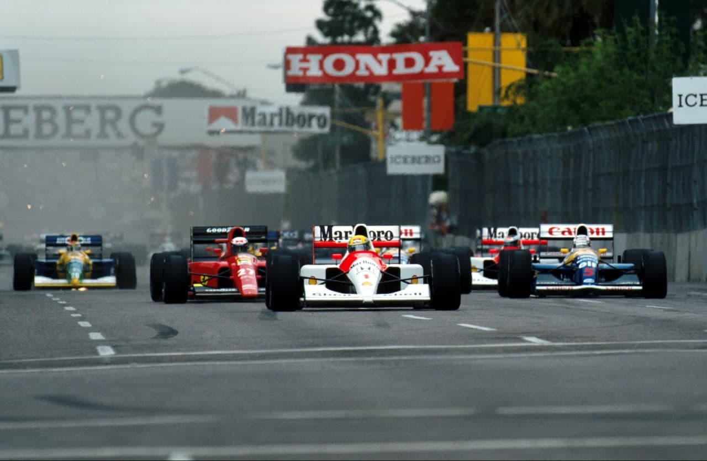
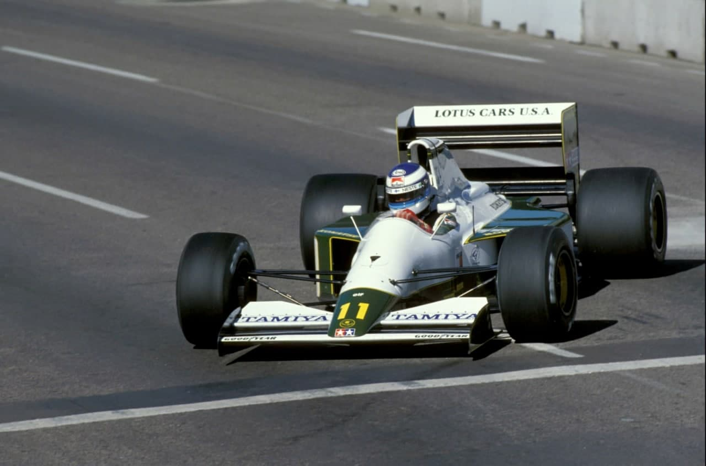
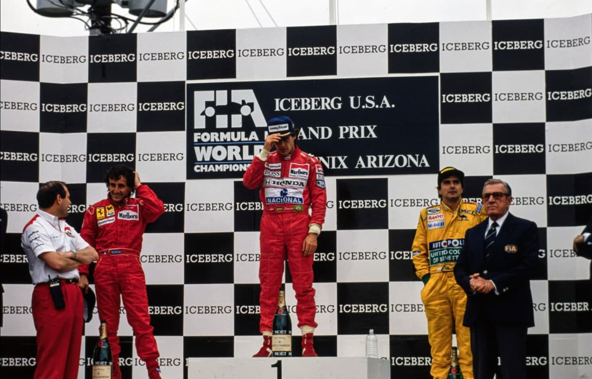

O FATOR SENNA!

Ayrton domina e iguala 27 vitórias de Stewart. Prost é segundo em uma Ferrari sem ritmo, e as Williams abandonam com problemas de câmbio. Piquet é terceiro. Suzuki pontua para a Larrousse. Dallara e Jordan brilham, e Hakkinen surpreende. Primeiro português na F1 em 30 anos, Chaves, não passa das pré.
Por Francisco Santos
Depois de conquistar mais uma "pole", sua 33ª nos últimos 40 GPs, Ayrton Senna liderou este GP de ponta a ponta de forma convincente. Atacando desde o início, para ir ganhando considerável vantagem sobre Prost, soube depois administrar o avanço, tendo até trocado de pneus sem perder a liderança. Depois de um final de campeonato algo triste devido ao acidente Senna-Prost no Japão, o mundo da F1 havia recarregado as baterias durante os quatro meses de férias constantemente interrompidas por testes. De novo a nova temporada começa de forma desconcertante, com as previsões baseadas nos testes de inverno a mostrarem-se erradas, embora a história se repita. Pela sexta vez, segunda consecutiva, a McLaren venceu o primeiro GP do ano na estréia de um carro novo, terminado nas vésperas da temporada começar. No entanto nada fazia prever esse desfecho. Nem mesmo a própria equipe estava otimista depois dos testes no Estoril dias antes. Chassis novo e motor Honda V12 novo haviam desiludido os pilotos. A Ferrari havia novamente dominado os testes de inverno. Os novos Williams/Renault FW14 haviam já demonstrado a sua competitividade. Mas, todos se esqueceram do "fator Senna", a grande diferença que um piloto como ele faz num carro e numa equipe. Desta vez foi Senna que venceu, e não o novo MP4-6, enquanto as Ferrari não corresponderam ao prometido e os Williams tiveram problemas com as novas caixas de câmbio semi-automáticas

F1 nos USA...
É uma tristeza. Em um país em que as corridas da NASCAR e CART atraem centenas de milhar de espectadores. Em uma sociedade em que os eventos promocionais são exemplo para profissionais de marketing de todo o mundo. Na maior economia mundial. A F1 tem mesmo de continuar desapercebida nos Estados Unidos. Pouco ou nada é feito para lhe dar a importância que merece, ou pensa merecer, e devolver-lhe o papel que já esboçou ter no passado. Possivelmente estou enganado quando penso que a F1, com as suas corridas-procissões normalmente bocejantes e os seus problemas de "prima-dona", tem algum interesse para os norte-americanos, habituados às emoções das corridas NASCAR e CART. Mas... em um país destes, com este mercado gigantesco para os patrocinadores e fabricantes da F1, havería que tentar mais soluções para atrair o interesse do público. Estas soluções não passam certamente pela falta de promoção do GP dos EUA, mais uma vez vista em Phoenix, onde a notoriedade da corrida CART do mês seguinte já era muito maior do que a do GP desse fim de semana. Algo melhorou, embora a aceitação da população local ao GP continuasse negativa ou, pelo menos, apática. O traçado da pista foi alterado, para desencravar o Centro Cívico, encurtado em 78 metros e bastante melhorado com o corte de algumas curvas em ângulo reto que o tornou mais rápido.

Dallara dominam a pré e Chaves não passa
Entre os oito conjuntos condenados às pré-qualificações, havia muitas novidades. Apenas dois clientes habituais: Olivier Grouillard, no seu velho carro, mas agora rebatizado Fondmetal em vez de Osella, e a Coloni já "prata da casa" de muitas madrugadas de 6ª feira de anos anteriores. Só que agora com o jovem promissor Pedro Matos Chaves, e com todas as esperanças dos entusiastas e dos patrocinadores portugueses. Depois de Cabral, 27 anos obrigavam a muita esperança. Mas ... Como haviam demonstrado nos testes do Estoril, os novos Dallara 191 com o novo motor Judd V10 dominaram desde cedo os outros 6 relegados, até com uma facilidade invulgar, que se traduziu nos dois primeiros tempos (Pirro e Lehto) e uma diferença de 1,5s para o surpreendente terceiro (Larini no Lambo) e o esperado quarto (Gachot no Jordan). De Cesaris esteve qualificado, mas na segunda metade do treino errou uma marcha e excedeu rotações, danificando o Ford HB V8. Pedro Chaves entrou na F1 com o pé direito, confirmando o potencial que lhe fora atribuído. Logo chegou a 1m33,655s antes de parar para regular o chassis, no momento em que os Dallara já baixavam para 1m29s. Com o Coloni sub-virador, é diminuído o apoio na traseira, colocado uma carenagem mais aberta posteriormente e montados os pneus de qualificação. Pedro entra de novo para a pista. Com a expectativa de Portugal e com as rezas de Enzo Coloni. Faz 1m31,113s e é quarto, mas as alterações haviam sido muitas, o carro escorregava bastante de traseira. Era parar e alterar de novo, ou tentar mesmo assim, quando faltavam apenas 10 minutos. Decidiu tentar. Na longa esquerda antes da chegada o carro entrou rápido demais, escorregou de frente na parte suja da pista e a saída de traseira para os pneus de proteção foi inevitável. Grouillard nada pode fazer com o velho Osella e os seus mecânicos terão dado por mal empregue o dinheiro que tiveram eles próprios que pagar pela própria estadia. O Lamborghini de Van de Poele partiu, e quando o belga saía da box com o Lambo de reserva, foi impedido de entrar na pista porque a sua cabeça passava do "Santo Antônio".

Alesi brilha mas Ayrton impõe-se
O primeiro treino oficial do ano em Phoenix tem sido palco de inúmeras batidas. Este ano só Mansell plantou o seu carro com mais força contra os muros de concreto. Ayrton bateu os dois Ferrari, com Im 23,525s, já mais de 5s melhor que a "pole" de Berger em '90.
À tarde, Piquet começou por ser o mais rápido, mas Ayrton com o seu primeiro jogo de pneus "Q" bateu-o por mais de 2s. Nakajima interrompeu a sessão ao bater forte com o Tyrrell e estragar a segunda tentativa de Ayrton. A poucos minutos do final, Alesi consegue o melhor tempo. Prost é terceiro, Patrese quarto e Pirro - um dos pré-qualificados - um espantoso quinto. Mansell, com problemas de transmissão, é 9a e Berger 1Ia.
Durante a noite estranhos entram na box da Leyton House e sabotam os carros de Gugel-min e Capelli, cortando tubulações de freios, cabos elétricos e injetores.
Na manhã de sábado, Patrese foi o mais rápido, seguido de Berger e Ayrton. A seguir, seis pilotos separados por apenas Is, entre os quais Gachot. Mika Hakkinen era 18s, impressionante para quem vinha direto da F3.
Na sessão final Prost ditou o tom logo de início, com Im 23,204s, colocando a Ferrari em "dobradinha". Mas depressa Ayrton bateu todos com Im 22,83Is. Patrese aproximou-se a dois milésimos. Foi Prost quem bateu Senna, com uma volta perfeita e Im 22,55s. Mas, como lhe é hábito, Ayrton soube encontrar o melhor momento para sair com o seu segundo jogo de pneus, a 10 minutos do final, e conseguir a "pole". Alesi ainda tentou, mas "estava demasiado nervoso" e bateu forte na nova curva rápida, a última esquerda.
Os computadores haviam previsto que o novo traçado iria ser 2,5s mais rápido. A nova pole era 7s melhor que a anterior. No grid final de notano 9a de Pirro, o 13a de Hakkinen e o 14a de Gachot.

Ayrton domina com cabeça
No "warm-up" Senna voltou a ser o mais rápido, mas significativos foram o 2ª e 3ª tempos de Mansell e Patrese, e o 7ª e 8ª de Prost e Alesi, quase 2s mais do que Senna. A primeira largada do ano repetia a primeira fila de Suzuka. Mas, a situação era diferente... Ótima largada de Ayrton, com Prost colando ao McLaren, Mansell larga melhor que Patrese e Alesi, como em 1990, consegue passar Berger e ainda antes do fnal da primeira volta passa Patrese. Senna afastava-se depressa de Prost, abrindo 1,8s na 1ª volta, para na 5ª a vantagem já ser de 3,6s. A Ferrari estava com problemas de embreagem e era uma surpresa como se conseguia manter na frente de Mansell. À 5ª volta, o primeiro abandono do ano, Bernard, com o motor quebrado. Para Larrousse foi um baque, três voltas depois Suzuki arrasta o Lola para a box. Alívio: era apenas um furo e ele volta no fim do pelotão, já uma volta atras de Senna. Nessa mesma 8ª volta, Hakkinen tem o maior susto da vida: numa das irregularidades do piso, o carro salta, um joelho, bate no fecho do volante e destrava-o. A mais de 240km/h, no retão, ele fica sem direcção. Por sorte consegue parar o carro sem bater em nada. Encaixado de novo o volante, retoma a prova. Senna aumentava a vantagem por mais de 1s por volta, enquanto Patrese se aproximava de Alesi, o passava e disparava no encalço de Mansell. Rapidamente os dois Williams estavam colados, com Patrese mais rápido. O italiano tenta ultrapassar Mansell, coloca-se a seu lado no final do retão, Mansell disputa a curva, Patrese tenta pelo outro lado, mas como Mansell não da espaço, para evitar uma batida bloca as rodas e sai pela area de escape, voltando à pista de imediato, mas atrás de Alesi e Berger, tendo perdido 4,7s. Falta de jogo de equipe de Mansell. Patrese é então o mais rápido em pista, rodando 2s mais rápido do que Senna para oito voltas depois passar Berger, que logo depois abandona com super aquecimento provocado por falta de pressão de gasolina. Mansell abandona com problemas de câmbio que já o afligiam há 10 voltas. Patrese depois herda o terceiro lugar quando Alesi é o primeiro carro a trocar Goodyear, e sobe a segundo quando Prost também troca e perde mais de 15s no box. Mas, a vantagem já era tanta que Ayrton decide parar para trocar pneus, e volta à pista ainda em primeiro. À 50ª volta a grande cena da prova: Patrese fica sem câmbio a meio da curva longa e rápida, com o carro em neutro, prime nervosamente a manete do câmbio no volante, e este seleciona a segunda marcha; o carro bloca as rodas traseiras e roda, ficando parado à saída da curva, e deixando o 2º lugar para Alesi. Os inexperientes comissários americanos agitam as bandeiras amarelas sem sinalizar o local do perigo, Piquet consegue evitar a batida, mas Moreno, que o seguia de perto atropela o Williams, passando com a roda dianteira direita a meio metro da cabeça de Patrese. O Williams permanece no mesmo local durante 7 voltas! O outro grande momento de emoção (positiva) da prova foi entre a 69ª e 70ª voltas. Alesi, acoçado por Piquet e Prost que se batiam, comete um erro, Piquet tenta passá-lo, ele não abre, e Prost, numa manobra "à la Senna" aproveita e passa os dois, recuperando definitivamente a 2ª posição. Alesi abandonaria três voltas depois com o câmbio quebrado.

Suzuki e Hakkinen
As grandes figuras da prova foram Aguri Suzuki e Mika Hakkinen. O japonês conseguiu chegar em sexto, atrás de Modena e Nakajima (embora 4º e 5°, os Tyrrell desiludiram face à performance de Alesi em 90) e conquistou um ponto precioso para a equipe Larrousse. Este ponto é uma boa resposta à FISA e à Ligier, a Larrousse sobe ao 10º lugar dos Fabricantes, e é a melhor equipe francesa, relegando a Ligier para o 11º posto. O jovem estreante finlandês, depois de parar duas vezes no box, continuou com garra, não cometendo erros, e fazendo o 13º tempo na prova. Abandonou com um tubo de óleo quebrado. Para um estreante foi exemplar.
